검은 나폴레옹 vs. 하얀 나폴레옹 - 백인들에게는 불편했던 영웅 (하편)
게시: 2017-10-14T13:37:30+09:00
지난편에서 르클레르의 원정 함대가 1802년 1월말, 생 도밍그 인근 사마나 만에 집결하는 모습까지를 보셨습니다.
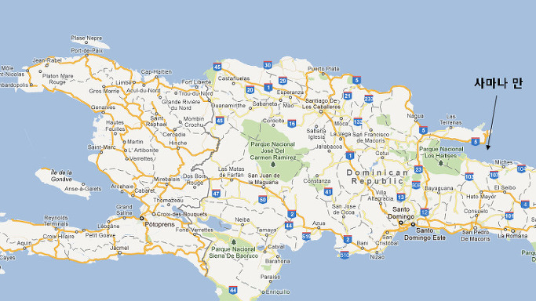
여기서 잠깐, 이 원정대의 임무를 다시 살펴보도록 하시지요. 나폴레옹이 르클레르에게 준 임무는 생 도밍그를 다시 프랑스 중앙 정부의 권위 밑으로 복귀시키라는 다소 고상한 것이었습니다. 하지만 어떻게요 ? 투쌩을 죽이라는 말인가요 ? 왜요 ? 투쌩은 한번도 프랑스 중앙 정부로부터 독립을 하겠다거나, 반항을 한 적이 없었습니다. 그런데 왜, 무슨 명분으로 투쌩을 잡아들이나요 ? 사실 이 원정대의 목적은 생 도밍그의 반란 노예들과의 전쟁이 아니었습니다. 이들의 공식적인 임무는 새로운 주지사(Captain general)의 안전한 부임이었지요. 나폴레옹은 투쌩과 구태여 툭탁거리며 싸우고 싶지 않았습니다. 평화적으로 일을 처리할 수 있다면, 굳이 병사들을 희생시키고 탄약과 무기를 소모시킬 필요가 없었지요. 그래서 그는 몇 년 전부터 프랑스에 유학 중이던 투쌩의 두 아들을 이 원정대에 포함시켜 투쌩에게 프랑스 중앙 정부의 선의를 보여주려 했습니다. 즉, 투쌩의 아들들을 인질로 잡아두는 따위의 일은 하지 않겠다는 의도를 명백히 한 것입니다.
흔히들 오해하시는 것 중 하나가, 나폴레옹이 생 도밍그에 다시 노예제를 부활시키라는 명령을 내렸다는 것인데, 나폴레옹은 적어도 드러내놓고 그렇게 명령하지는 않았습니다. 다만 나폴레옹은 현지에서 군사력을 장악하고 있는 흑인 장교들의 직위를 박탈하라는 명령은 분명히 내렸다고 합니다. 나폴레옹이 꼭 노예제를 부활시키라고 한 것은 아니었다고 해서, 나폴레옹이 흑인들에게 우호적이었다는 것은 아닙니다. 그는 흑인들을 신뢰하지 않았고, 자신과 동등하다고 생각하지도 않았으며, 그저 생 도밍그의 설탕 생산이 제대로만 돌아간다면, 노예제든 임금 노동제건 상관하지 않았을 뿐이지요. 또한 그는 이런 조건들을 관철시키려면, 현지 흑인 군대와의 충돌이 불가피하다고 보았습니다. 그러니까 2만 명이 넘는 병력과 전열함만 해도 35척인 대함대를 동원했던 것이지요. 또한 나폴레옹은 단순히 무력만으로 생 도밍그를 장악하려고 하지는 않았습니다. 그는 생 도밍그 내부의 갈등과 분열에 대해서 어느 정도 이해하고 있었고, 그래서 투쌩에 의해 프랑스로 쫓겨와있던 뮬래토 장군인 리고 (Andre Rigaud)와 그의 뮬래토 부대도 이 원정대에 포함시켰습니다. 나폴레옹은 이들이 현지 뮬래토 엘리트들을 규합하여 투쌩의 권력 기반을 잠식하기를 바랬습니다.
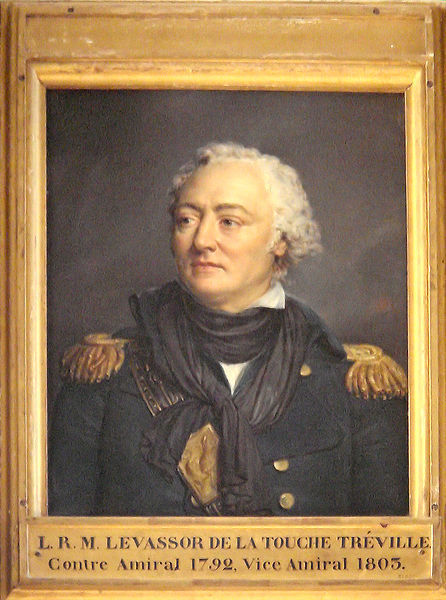
(트레빌 제독은 그다지 잘 알려진 제독은 아닙니다만, 미국독립 전쟁에도 참전했고, 특히 1801년 8월 두차례에 걸쳐 불로뉴 항구를 습격한 넬슨의 소함대를 (비록 육상에서 반격하기는 했지만) 격퇴한 것으로 유명합니다. 이 전투에서 영국은 7척의 배를 잃었고 44명 전사, 126명 부상에 3명의 포로를낸 것에 비해, 프랑스 측은 1척의 배를 나포당하고 8명 전사, 12명 실종, 34명 부상으로서, 기록으로만 보면 프랑스의 승리라고 할만 했습니다.)
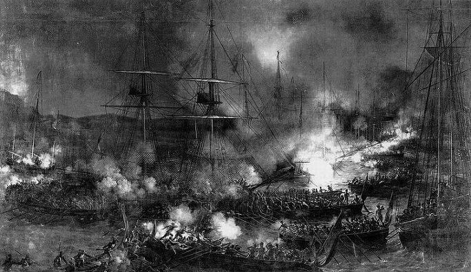
(불로뉴 항구 습격 사건입니다. 이 전투에서 영국군이 잃은 배의 수가 너무 많아서 놀라셨을 겁니다. 사실 그렇게 잃은 것들은 대개 이런 대형 보트였지요.)
르클레르의 원정 함대는 하나의 대선단으로 구성된 것은 아니었습니다. 어떤 함대는 조유즈(Villaret de Joyeuse) 제독 지휘 하에 브레스트(Brest)에서, 어떤 함대는 트레빌 (Louis-René Levassor de Latouche Tréville) 제독 지휘 하에 로슈포르(Rochefort)에서, 또 그 외에도 강톰(Ganteaume) 제독과 리느와(Linois) 제독이 각각 함대를 이끌고 약간씩 시차를 두고 출발했지요. 원래 계획은 이들이 히스파니올라 섬 동쪽, 그러니까 스페인 식민지 쪽인 도미니카 북동쪽 해안의 사마나(Samana) 만에서 집결하는 것이었습니다. 하지만 강톰과 리느와의 함대가 늦어지고 있었습니다. 르클레르는 결정을 내려야 했지요.
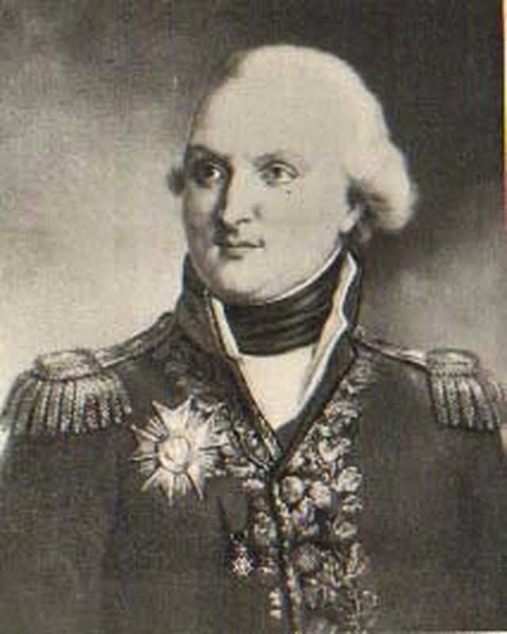
(조유즈 제독입니다. 그의 활동이 이후 별로 없었던 이유는 지휘권을 둘러싼 갈등으로 인해, 그가 함대를 이끌고 프랑스로 돌아가 버렸기 때문입니다. 사실 일단 병력 수송이 끝나고 난 이후에는 그런 대함대가 꼭 필요한 것도 아니었지요.)
아마 여러분은 초강대국인 프랑스의 대원정군에 맞선 노예 출신의 어중이떠중이 흑인들로 구성된 군대의 운명은 뻔한 것이라고들 생각하실 것입니다. 하지만 정작 르클레르 자신은 본인의 처지에 대해 그다지 낙관적이지 못했습니다. 당시 생 도밍그의 흑인 정규군은 약 2만명으로서, 프랑스 원정군과 거의 비슷한 수였습니다. 그러나 프랑스군은 아직 집결이 완료된 상태가 아니었고, 상당수가 아직 대서양을 건너는 중이었습니다. 또한, 당시엔 아직 상륙 주정이라는 것이 없었으므로, 대규모 병력을 한꺼번에 상륙시키는 것이 사실상 불가능했습니다. 만약 흑인 부대들이 주요 항구와 해안을 굳게 지키고 있다면 성공적인 상륙전이 어려울 수 있었습니다. 무엇보다 흑인 부대들은 이미 주요 요충지를 지키는 유리한 입장인 것에 비해, 자신들은 낯선 열대의 섬에 상륙하여 공격을 해야 하는 입장이다보니 불안하기 짝이 없었습니다.
또 막연히 흑인 부대들이 무장이 빈약할 것이라고들 생각하시겠지만, 실은 이들도 모두 제대로 된 플린트락 머스켓으로 잘 무장되어 있었고 많지는 않지만 포병대까지 갖추고 있었습니다. 이런 무기와 탄약들은 어디서 났던 것일까요 ? 생 도밍그에 주둔했던 프랑스 식민지 수비대의 장비들이나 백인 농장주들의 무기를 빼앗거나 넘겨받은 것도 있었습니다만, 특히 미국에서 들여온 무기가 상당히 많았습니다. 이는 꽤 노련한 정치가이자 외교관이었던 투쌩 덕분이었습니다. 그는 2년전 뮬래토들의 장군인 리고와 싸울 당시, 미국의 대통령이던 존 아담스 (John Adams)에게 프랑스가 향후 북미 지역에 세력 확장을 꾀할 때 생 도밍그를 기지로 쓰지 못하도록 하겠다고 약속하는 대신 무기 지원을 요청했던 것입니다. 그 무기들 덕택에 생 도밍그 흑인 부대의 무장 수준은 그다지 떨어지는 편은 아니었습니다. 포병대가 숫자나 숙련도 면에서 크게 열세이긴 했지만, 생 도밍그 흑인 병사들은 최근 많은 전투를 치루었으므로 전투 훈련도 잘 되어 있는 편이었지요. 무엇보다도, 이들은 어중이떠중이 게릴라 부대나 민병대가 아니라, 제대로 된 정규 상비군 병사들이었습니다. 제대로 된 장교 조직도 갖추고 있었고요. 생각해보면 40만 정도되는 생 도밍그에 상비군만 무려 2만이라고 하면, 인구 대비 병사 비율이 5%로서 굉장히 높은 편입니다. 우리나라도 겨우 1.5%이고, 심지어 북한도 약 3% 수준인데 말입니다. 투쌩은 이제 막 노예 상태에서 벗어난 생 도밍그가 영국이건 스페인이건 또는 본국 프랑스이건 유럽 세력으로부터 살아남기 위해서는 강력한 군사력이 꼭 필요하다고 생각하여 이런 강력한 군대를 유지하고 있었던 것입니다.
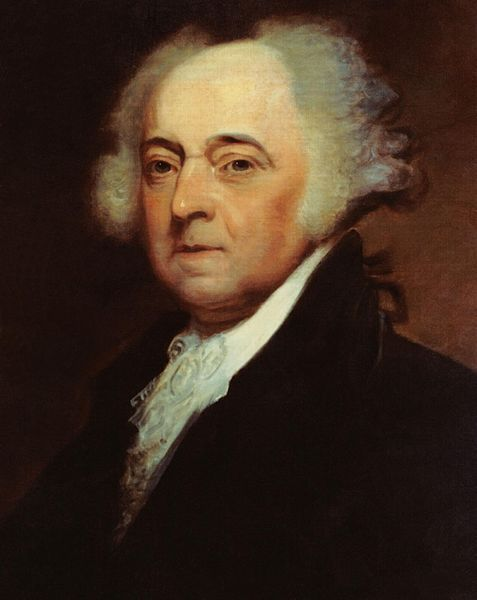
(미국 제2대 대통령인 존 아담스입니다. 생 도밍그의 반란 사건은 미국에도 당연히 큰 영향을 끼쳤으므로, 아담스로서도 어떤 방향으로든, 생 도밍그에 뭔가 조치를 취하긴 해야 했습니다. 가장 큰 영향은 뒤에 말씀드릴 루이지애나 매각 조약이었지만, 그에 못지 않게 생 도밍그에서 도망쳐 온 프랑스계 주민들로 인해 남동부 해안에 프랑스 계통의 크레올 문화가 발달했다는 점도 있습니다. 특히 이들이 데리고 온 노예들이 혹시 미국내 노예들에게 반란의 불씨를 번지게 하지 않을까 하고 미국 노예주들은 매우 긴장했었지요.)
하지만 바로 이 제대로 된 정규군 조직이 투쌩의 몰락을 부르게 됩니다. 이런 강력한 군대를 유지하기 위해서는 무엇보다도 돈이 필요했습니다. 전 인구의 5%를 병사로 만들자면, 그들에게 (우리나라 군대처럼 애들 과자값이 아닌) 최소한 농장 노동자만큼의 급료를 줘야했고, 장교들에게는 더 많이 줘야 했습니다. 게다가 탄약이나 무기를 미국에서 계속 사와야 했지요. 하지만 최근 10년간 피로 얼룩진 노예 반란 탓에, 한때 그토록 많은 부를 낳아주었던 사탕수수 농장이나 설탕 공장 등은 완전히 피폐되어 있었으므로, 생 도밍그의 경제는 그야말로 파탄직전이었습니다. 이런 상황에서 돈이 어디서 나오겠습니까 ? 이런 상황을 타파하기 위해, 투쌩은 극단적인 조치를 취합니다. 즉, 전직 노예들을 원래 소속되었던 농장으로 돌려보내 강제로 일을 하게 한 것입니다. 더 나쁜 것은 효율적인 농장 경영을 위해, 자메이카나 뉴 오올리언즈 등으로 도망쳤던 백인 농장주들을 다시 불러들여 그 전직 노예들을 관리하게 했다는 것입니다. 물론 흑인 농부들은 노예로서가 아니라 제대로 된 급료를 받는 농장 노동자로서 일하는 것이었지만, 그 원수같던 백인 농장주에 의해 정해진 시간에 무조건 농장으로 내몰려 뙤약볕 밑에서 힘든 사탕수수 농사를 지어야 했던 흑인들은 이 조치에 강력하게 반발했습니다. 원래 사탕수수 농사는 커피 농사 등에 비해 몹시 힘든 일이었습니다. 하지만 미국이나 자메이카에서 돈을 벌어오려면 역시 사탕수수가 가장 적합했으므로 투쌩은 사탕수수 농사를 강요했습니다. 이런 강제 조치는 1801년 10월, 즉 프랑스 원정대 도착 직전에 투쌩의 조카인 모이즈(Moïse) 장군 주도하의 무장 반란으로 이어졌고, 이는 결국 잔혹한 무력으로 진압되었습니다. 이런 사정으로 인해, 사마나 만에 프랑스 함대가 나타났을 때, 투쌩의 정치적 입지는 많이 흔들리는 편이었습니다. 사실 생 도밍그를 지키기 위해서는 최신식 머스켓 소총보다는 자유를 향한 흑인들의 열망과 단결이 어쩌면 더 중요했을 것 같은데 말입니다.

(나라를 지키는데는 국민들의 단합이 더 중요할까요 이런 머스켓 소총이 더 중요할까요 ? 글쎄요... 정답은 둘다 !)
르클레르도 이런 상황에 대해서 어느 정도 알고 있었을 것입니다. 그는 이런 상황을 십분 활용하기로 합니다. 그에게는 있지만 투쌩은 가지지 못한 것이 2가지 있었는데, 그것들은 생 도밍그의 정치 상황과 맞물려 아주 좋은 무기가 되었습니다.
1) 중앙 정부의 권위
누가 뭐래도 르클레르와 그의 원정대는 투쌩이 충성을 맹세한 프랑스 중앙 정부가 파견한 정식 관원들이었습니다. 투쌩은 물론이고, 특히 투쌩의 부하 장교들도 그들에게 복종할 의무가 있었습니다. 특히 투쌩의 전직 노예 출신 부하 장교들은 자신들의 지위, 심지어 자유조차도 실은 불안하기 짝이 없는 것으로 중앙 정부가 마음만 먹으면 언제든 자신들은 다시 사탕수수 밭의 검둥이 노예가 될 수 있다는 것을 잘 알고 있었습니다. 반대로 말하자면, 그들은 마음 속으로는 프랑스 중앙 정부의 공식적인 인정을 바라고 있었다는 이야기지요.
2) 기동력
전에 나폴레옹이 리볼리 전투에서 부족한 병력으로도 다수의 적을 내선이동의 잇점을 활용하여 효과적으로 막아내는 모습을 보신 적이 있지요. 투쌩의 병력들은 히스파니올라 섬을 지키고 있고, 르클레르는 그 섬을 침공하는 입장이었으므로, 투쌩이 그 전선의 안쪽에, 르클레르는 바깥 쪽에 있었습니다. 따라서 기동성의 잇점은 투쌩에게 있었습니다. 하지만 여기에는 중요한 사실이 하나 빠져 있었지요. 히스파니올라 섬은 이탈리아 리볼리와는 달리 빽빽한 밀림과 산악지대로 이루어진 섬이었고, 따라서 투쌩은 (히스파니올라는 실상 꽤 넓은 섬이었으므로) 여러 해안 요충지에 분산된 부하들과의 교신이 쉽지 않았습니다. 그에 비해 르클레르의 병력은 함대에 분승하고 있었으므로, 바람만 괜찮다면 오히려 투쌩보다 기동성에서 우위를 점할 수 있었습니다.
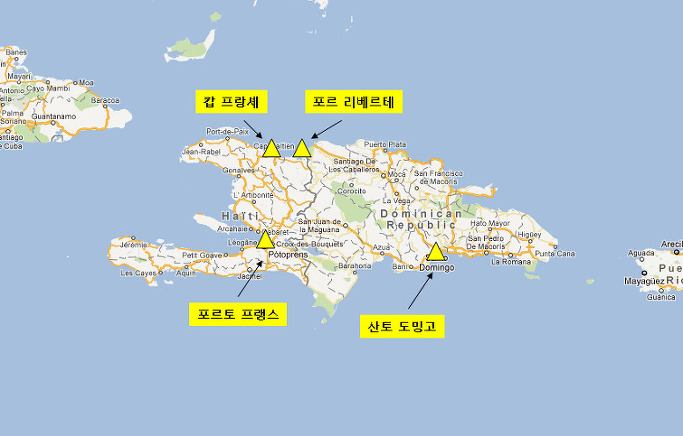
르클레르는 이 두가지 점을 활용하기로 합니다. 그는 섬의 요충지 여러 곳을 동시에 들이치면서, 이를 침공이 아닌 중앙 정부의 권력 인수 인계로 포장을 합니다. 즉 케르베르소(Kerverseau) 장군의 함대는 동쪽의 산토 도밍고(Santo Domingo)에 나타났고, 부데 (Jean Boudet) 장군은 트레빌 제독의 함대와 함께 산 도밍그의 신흥 수도인 포르토 프랭스(Port-au-Prince, 지금도 아이티의 수도지요)에 나타났습니다. 동시에 자신과 조유즈 제독의 함대는 산 도밍그 최대 도시이자 예전 수도인 캅 프랑셰 (Cap Francais, 프랑스 곶이라는 뜻입니다만, 지금은 이름을 캅 아이시앵 Cap-Haitien, 즉 아이티 곶으로 바꾸었습니다) 앞바다에 나타났습니다. 흑인과 뮬래토들을 미워하기로 유명했던 로샹보(Donatien-Marie-Joseph de Vimeur, vicomte de Rochambeau) 장군은 캅 프랑셰 약간 동쪽의 요충지인 포르 리베르떼 (Fort Liberte)를 공략하기로 했습니다.
이런 프랑스군의 움직임에 대해 투쌩은 어떻게 반응했을까요 ? 사실 프랑스 함대가 사마나 만에 정박했을 때 이미 투쌩은 그에 대한 보고를 받았습니다. 그는 각지를 지키고 있는 부하들에게 명령을 내려, 만약 프랑스 함대가 흑인 부대장을 불러 회담을 요청하면 반드시 그에 응할 것을 명하고, 혹시 회담 요청이 없다면 오히려 이쪽에서 회담 요청을 하라고 했습니다. 르클레르의 예상대로, 말만 잘 통할 것 같다면 투쌩은 프랑스 중앙 정부의 권위에 정면 도전할 생각은 없었던 것입니다. 하지만 프랑스군이 아무 대화 없이 그냥 상륙을 시도한다면 맞서 싸우지 말고 도시와 농장을 불태우고 산 속으로 후퇴할 것을 지시했습니다. 일설에는 후퇴하기 전에 생 도밍그의 백인들을 학살하라는 지시도 했다고 합니다만, 제 생각에는 그건 투쌩답지 않은 조치라서 믿어지지는 않습니다. 그러니까, 투쌩의 기본적인 전략은 프랑스 중앙군과의 직접적인 교전을 피하고, 영국군이 그랬던 것처럼 황열병에 의해 프랑스군이 스스로 무너질 때까지 산속에서 기다린다는 것이었지요. 사실 좋은 계획이었습니다. 딱 한가지만 빼고요. 바로 부하들에 대한 통신과 장악력이었지요.
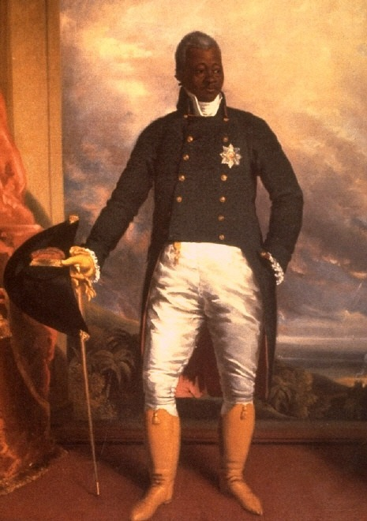
(훗날 앙리 1세로 아이티 국왕으로 즉위한 크리스토프입니다. 그의 자손은 계속 아이티의 권력계에 남았고, 그의 손자도 아이티 대통령직에 오릅니다.)
1802년 2월 3일 캅 프랑셰 항구에 나타나 상륙 허가를 요청하는 르클레르에 대해, 그곳을 지키던 흑인 장군 크리스토프 (Henri Christophe)는 투쌩의 지시대로 협상 전에는 상륙을 허가할 수 없다며 버텼습니다. 그러나 2월 5일 바로 옆 동네인 포르 리베르떼 (Fort Liberte)에 로샹보가 갑자기 상륙하며 전투가 시작되었습니다. 일이 이렇게 되자 크리스토프는 투쌩의 계획대로 시가지와 농장들에 불을 지르고는 산 쪽으로 퇴각했습니다. 하지만 다른 곳들은 그렇지 않았습니다. 산토 도밍고를 지키고 있던 투쌩의 동생 폴 루베르튀르 (Paul Louverture)는 가짜 편지에 속아 순순히 프랑스군을 받아들이고 그들에게 협력했고, 남쪽의 포르토 프랭스를 지키던 라플륌(Laplume)도 부데(Budet) 장군에게 항복했습니다. 뿐만 아니라 여러 주요 도시와 마을에서도 교전 회피, 초토화 작전 이후 후퇴라는 대전략을 따르지 않고, 격렬한 저항전이 펼쳐지거나 그냥 프랑스군을 받아들이는 모습들이 연출되었습니다. 일이 이렇게 된 것은 역시 최근 투쌩의 강압적인 정책에 반발하는 무리들이 많았기 때문이었고, 또 일부 흑인 장교들이 프랑스 중앙 정부의 권위에 굴복했기 때문이기도 합니다. 이런 상황에서, 르클레르는 '모든 흑인들의 자유와 기존 직위, 재산과 권리를 인정하고 보호해주겠다'라고 선언을 했으니, 그런 르클레르에게 반항한다는 것은 흑인 지휘관들에게 쉽지 않은 결정이었을 것입니다.
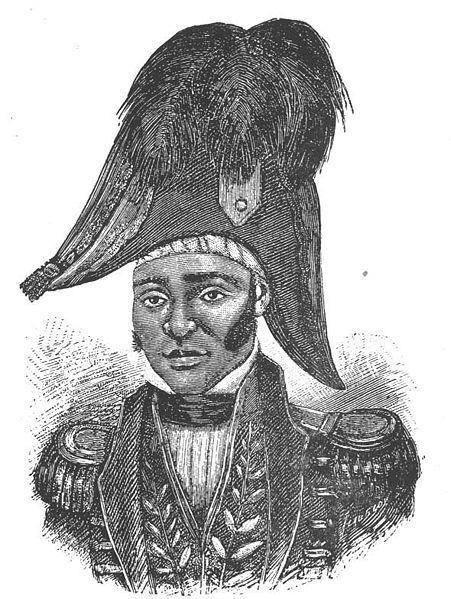
(데살린은 대체 투쌩이 이런 인물을 부하로 거느렸다는 점이 이상하게 느껴질 정도로 매우 포악한 성격이었다고 합니다.)
상륙 초기에 르클레르가 본국에 보낸 보고서를 보면 프랑스군은 당시 전황에 대해 매우 불안해하고 있었습니다. 40만의 흑인으로 가득찬 섬에 불과 1만 몇 천 되는 병력으로 상륙했으니 그럴만도 했겠지요. 하지만 위에서 설명한 사정 때문에, 불과 10일 만에 프랑스군은 주요 항구와 도시, 주요 경작지들을 장악할 수 있었습니다. 르클레르 본인의 예상을 뛰어넘는 대성공이었지요. 한편 투쌩은 자신의 충복인 크리스토프(Henri Christophe, 훗날 아이티의 왕이 됩니다)와 데살린(Jean-Jacques Dessalines, 훗날 아이티의 황제가 됩니다)와 함께, 불과 수천 명의 병력만을 거느리고 북부 산악지대에 숨어 있었지요. 르클레르는 이런 초기의 성공을 투쌩에게도 적용하고자 그의 두 아들을 투쌩에게 보내주며 '항복하면 투쌩을 르클레르의 대리인으로 임명하고 그의 장군직과 재산 등을 모두 인정해주겠다'는 나폴레옹의 편지까지 전달했습니다. 하지만 투쌩은 르클레르의 제안을 거절했지요. 아무리 그 말이 달콤하다고 할지라도, 정말 선의로 왔다면 저렇게 전함과 2만이 넘는 병력을 끌고 오지는 않았을 테니까요.
이러는 사이에 강톰 제독과 리느와 제독이 이끄는 함대들이 도착하여 병력이 증원되자, 르클레르는 2월 17일, 투쌩을 잡기 위해 토끼몰이식의 광대한 작전을 시작합니다. 로샹보가 포르-리베르떼로부터 남서쪽 방향의 생-미셀 (Saint Michel)로 밀어붙였고, 또 아르디(Hardy) 장군이 카프 프랑셰로부터 남쪽의 마르멜라드(Marmelade)로, 데푸르노(Desfourneaux) 장군이 플레상스(Plaisance)로 진격했습니다. 동시에 윔베르(Humbert) 장군이 포르 데 페 (Port-de-Paix)에 상륙하여 트롸-리비에르(Trois-Rivières) 협곡으로 진격했고, 남쪽에서는 부데 장군이 뽀르또 프랭스에서 북쪽으로 진격을 시작했습니다. 이는 사방에서 투쌩의 저항 세력을 위협하여 그들을 중서부 해안인 고나이브(Les Gonaïves) 지역으로 몰아넣기 위한 것이었는데, 이 계획이 잘 먹혀들었습니다. 이 작전의 성공은 병력의 우위보다도, 르클레르 측이 바다를 통해 손쉽게 통신을 유지할 수 있었으므로 가능한 것이었지요.
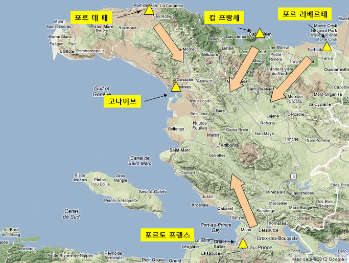
(상륙 이후 프랑스군의 진격 방향입니다.)
투쌩의 병력은 여기저기서 고립되어 프랑스군에게 격파당하는 수 밖에 없었습니다. 특히 크레따-피에로(Crête-à-Pierrot) 요새가 프랑스군에게 함락되면서 거기에 비축해두었던 무기와 탄약을 상실한 것이 큰 타격이었습니다. 사실 이런 상황은 투쌩에게 처음 겪는 것도 아니었습니다. 과거 영국군과 싸울 때도 이런 상황이었으니까요. 하지만 르클레르의 위협은 당시 영국군과의 전쟁과는 또 다른 것이었습니다. 당시 영국군은 해안가의 도시들과 경작지를 점유하는 것으로 만족했으나, 이번 르클레르가 이끄는 프랑스군의 목적은 투쌩의 항복을 받아내는 것이었으므로, 집요한 추격이 산속까지 이어졌습니다. 게다가, 이들은 흑인 부대를 공격만 하는 것이 아니라, 달콤한 유혹으로 꼬여냈습니다. 이는 영국군과의 전쟁에서는 없었던 일이었지요. 특히 이미 항복했던 라플륌이나 모레파(Jacques Maurepas) 등의 흑인 장교들을 르클레르가 상당히 우대해주고 있다는 사실이 쫓기는 흑인 병사들, 특히 장교들에게는 절실하게 다가왔습니다. 그리고 이것이 결국 투쌩의 결정적인 패인이 되었습니다. 먼저 크리스토프가 항복을 했고, 곧 이어 데살린도 프랑스군에게 투항했습니다. 이렇게 되자 홀로 남은 투쌩도 어쩔 방법이 없었습니다. 그도 결국 르클레르에게 항복해야 했지요.
5월 6일, 투쌩은 잔여 부대를 이끌고 이제 프랑스군의 본거지가 된 캅 프랑셰로 걸어들어가 르클레르와 회담 후 정식으로 항복했습니다. 조건은 꽤 괜찮은 편이었습니다. 투쌩은 장군으로서 직위를 모두 인정받았고 앞으로도 그에 따른 예우를 받게 되었을 뿐만 아니라, 예전부터 그가 소유하고 있던 에너리(Ennery) 지역의 농장들의 소유권을 인정받습니다. 그러나 일부 직속 경호 병력을 제외하고는 실제 권력은 모두 양도해야 했고, 사실상 가택 연금 상태에 놓여집니다. 그에 비해 크리스토프와 데살린은 항복 이후에도 흑인 병력들에 대한 지휘권을 맡아서 현역 장교로 복무하게 되었습니다. 이는 르클레르로서도 어쩔 수 없는 선택이었습니다. 사실 르클레르가 받은 명령은 흑인 부대들을 모두 해체하고 그 장교들도 모두 퇴역시키라는 것이었습니다만, 현장에서 보니 그건 도저히 불가능한 일이었거든요. 프랑스군만큼이나 수가 많은 흑인 병사들을 당장 해산시켜 농장 노동자로 돌려보내면 그들이 반란을 일으킬 가능성이 많았습니다. 게다가 생 도밍그의 전투는 아직 완전히 끝난 것이 아니었습니다. 소규모의 산적화된 흑인들이 아직도 각지에서 프랑스인들을 습격하고 있었습니다. 그러니 현실과 타협하여 일부 흑인 장교들을 그대로 유지시키고, 그 병력을 자신의 휘하에서 운용하는 것이 더 현실적인 선택이었지요.
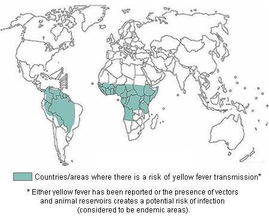
(색칠된 부분이 황열병 발생 지역입니다. 저쪽 동네에 갈 때는 반드시 황열병 백신을 맞고 가셔야 합니다. 그림에서 보시다시피 원래 황열병은 아프리카에서 흑인 노예들을 따라 온 병이지요.)
그런 상황에서 드디어 그 무서운 손님이 프랑스군의 병영을 방문했습니다. 바로 황열병, 그분이셨지요. 한 1~2주 만에 곳곳에서 병사들이 쓰러져갔습니다. 이 황열병이라는 것은 사실 걸리기만 하면 100% 다 죽는 것은 아니었습니다. 황열병 바이러스를 가진 모기가 사람을 문다고 해서 그 사람이 반드시 황열병에 걸리는 것도 아니었고, 모기 침 속에 어느 농도 이상의 바이러스가 축적되어 있어야 했습니다. 또 황열병이 발병을 한다고 해도, 그 중에서 약 15% 정도의 사람만 구토와 고열에 시달리다 그 중 반이 죽음에 이르는, 진짜 황열병으로 발전되었습니다. 나머지 85%는 그냥 열병을 앓다가 낫는 정도로서, 이들은 실제로는 황열병에 걸린 줄도 모르고 넘어가는 경우였습니다. 아무튼 이 황열병이 프랑스군을 덮치자, 병사들이 정말 신속하게 죽어넘어지기 시작했습니다. 아무래도 계속 황열병 바이러스에 노출되었던 흑인들보다 이제 막 프랑스에서 도착한 원정군이 황열병에 취약할 수 밖에 없었던 것이지요.
상황이 이렇게 되자 르클레르는 크게 궁지에 몰렸습니다. 그는 황열병의 창궐까지는 몰라도, 이를 틈타 흑인 반란군들이 극성을 부리며 습격을 해오는 상황 뒤에는 투쌩이 있다고 확신했습니다. 실은 나폴레옹으로부터 흑인들의 우두머리를 제거하라는 명령을 받은 상태였으니, 무슨 핑계를 대서라도 결국 투쌩을 잡아들여야만 했겠지요. 그는 투쌩을 체포하는 명분으로, 투쌩이 썼다는 2통의 편지를 제시했습니다. 그 편지 내용은 프랑스군의 황열병 상태를 잘 주시할 것과, 르클레르의 건강이 나빠지면 거사를 개시해야 한다는 등의 내용이었습니다. 나중에 투쌩은 그런 편지를 썼다는 사실 자체를 부인했습니다만, 사실 그 필체나 맞춤법이 틀린 것, 무엇보다 그 문맥 속에 흐르는 기백과 정신은 누가 봐도 투쌩이 쓴 것처럼 보였다고 합니다. 사실이야 어찌되었건 이를 명분으로, 르클레르는 투쌩을 체포하기로 합니다.
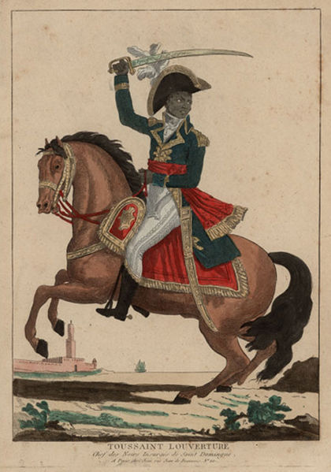
(투쌩의 초상화는 사실 모두 엉터리입니다. 아무도 투쌩의 얼굴을 직접 보고 그린 사람은 없고, 그냥 생김새 이야기를 대충 듣고 그린 것이라네요.)
투쌩의 체포는 프랑스군으로서는 다소 수치스러운 방법으로 이루어졌습니다. 혹시 투쌩의 농장으로 병력을 보내 체포하려다가 투쌩이 다시 산악 지방으로 도주하여 게릴라 전투를 지휘하게 될까봐, 초소 배치 문제를 논의하자는 핑계로 투쌩과 사이가 좋은 편이었던 브뤼네(Brunet) 장군의 사령부로 투쌩을 초청했습니다. 투쌩과 만나 처음에는 다정하게 포옹으로 인사해야 했던 브뤼네 장군은 입장이 난처했을 것입니다. 아무튼 회의 도중에 갑자기 브뤼네가 자리를 비우자마자 무장 병사들이 방에 난입하여 투쌩을 포박했습니다. 이런 식의 비겁한 속임수로 투쌩을 체포한 것은 두 가지로 해석이 되는데, 프랑스군이 투쌩을 신사로 인정하지 않았거나, 프랑스군 자신이 신사가 아니거나 둘 중 하나였겠지요. 아무래도 저는 후자라고 생각합니다.
사실 투쌩의 언행이나 그의 작전 능력에 대해서는 그다지 잘 알려진 바가 없습니다. 그러나 그를 감시한 프랑스측 인사들이 기록한 체포된 투쌩의 말들을 보면 정말 투쌩이 대단한 인물이라는 생각이 저절로 들게합니다. 가령 이렇습니다.
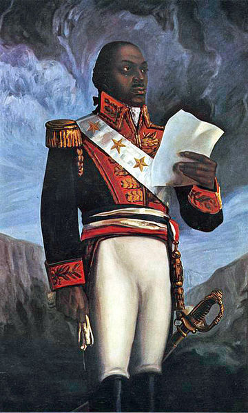
(투쌩은 몸집이 왜소한 편이었으나, 그의 기지와 언변, 그리고 신비감을 동반한 카리스마에 대해서는 프랑스측 인사들도 모두들 놀라움을 표시했습니다.)
(잡혀온 투쌩을 맞이한 어느 프랑스 장교가 '하, 드디어 널 잡았구나, 투쌩 ?' 하고 놀리자)
"그래, 너희들이 내 머리를 잡았지. 하지만 내 꼬리는 못 잡았어."
(그를 프랑스로 호송한 사바리(Savary) 장군이 '이젠 검둥이 나폴레옹 역할을 못하게 생겼군, 안그런가 ?' 하고 놀리자)
"나를 제거하는 것은 생 도밍그 자유의 줄기를 자르는 것에 불과하다. 자유의 나무는 다시 자랄 것이다. 그 뿌리는 깊고 넓으니까."
(그의 14살짜리 아들이 사슬에 묶여 끌려온 투쌩을 보고 울며 그의 품에 안기자)
"내 아들은 울어서는 안된다. 내 아들이라면 불행 속에서도 용기를 잃지 않는 법을 배우고, 또 미래를 꿈꿀 수 있어야 한다."
이런 멋진 말들을 할 수 있으려면 책도 많이 읽어야겠지만 무엇보다 그 사람 자체에 깊이가 있어야 합니다. 아무튼 이렇게 프랑스로 잡혀간 투쌩은 쥐라(Jurat) 산맥의 포르 드 죽(Fort de Joux)의 차가운 감방에서 방치되어 있다가, 약 1년도 안되어 백인들의 속임수에 대한 분노와 울분 속에서 폐렴과 뇌졸증으로 인해 1803년 4월 7일 사망하고 맙니다. 나중에 세인트 헬레나 섬에서 유배 생활을 하던 나폴레옹에게 누군가가 '그 프랑스에게 배신을 당해 감방에서 죽은 투쌩에 대해서는 어떻게 생각하십니까' 하고 묻자 나폴레옹은 그저 '불쌍한 검둥이 노예 하나가 죽은 것이 무슨 의미가 있겠나' 라며 대수롭지 않게 넘겼다고 합니다. 나폴레옹은 확실히 인간적으로 좋은 사람은 아닌 것 같아요.
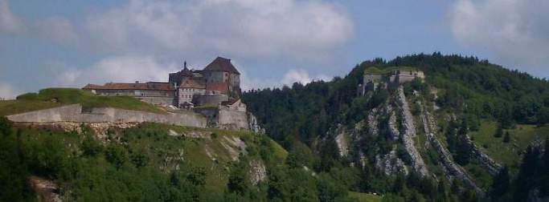
(투쌩이 숨을 거둔 포르 드 죽 성채입니다.)
한편, 투쌩을 비겁한 수로 잡아들인 르클레르도 두발 쭉 뻗고 쉴 수는 없었습니다. 그가 투쌩을 잡아들인 것에 더해, 농장 노동자로 일하던 흑인들로부터 무기를 수거해 들이라는 명령이 떨어지자, 산속의 흑인들 뿐만 아니라 농장에서 일하던 흑인들조차도 공공연한 반란에 가담하기 시작했습니다. 과거 생 도밍그에 노예 해방 선언을 했던 프랑스인 관료 손쏘낙스(Sonthonax)가 한 말이 있었기 때문이었지요. 그는 투쌩을 도와 흑인 병사들에게 무기를 나누어주면서 만약 백인들이 다시 이 무기들을 거두어들이려 한다면, 그건 너희들을 다시 노예로 만들기 위함이라고 예언아닌 예언을 한 적이 있었던 것입니다. 르클레르는 이제 그의 부하가 된 크리스토프와 데살린 등 과거 투쌩의 흑인 부하 장군들을 동원하여 이런 반란을 무자비하게 진압했습니다. 거듭 말씀드리지만 흑인들끼리도 이해 관계와 질투 등이 복잡하게 얽혀서 원수지간이 많았거든요. 이 와중에 블레어(Charles Belair)나 모레파(Jacques Maurepas), 폴 루베르튀르(Paul Louverture) 등 과거 투쌩의 부하 장교들이 많이 희생됩니다. 특히 난폭한 성격이었던 데살린은 아주 잔인한 방식으로 과거의 동료들을 살해했다고 합니다.
이런 상황에서 결정타는 이웃 섬이자 같은 프랑스 식민지인 과달루프(Guadeloupe)에서 날아옵니다. 과거 호엔린덴에서 영웅적인 전과를 보여주었던 리슈팡스(Antoine Richepanse)가 본국의 훈령에 따라 과달루프에 다시 노예제를 부활시킨 것입니다. 이 소식이 생 도밍그에 도착하자 생 도밍그는 거의 공공연한 반란에 빠져듭니다. 노예제의 부활이 곧 생 도밍그에서도 선언될 것이라는 것이 쉽게 예상되었고, 이는 생 도밍그의 흑인들에게는 도저히 받아들일 수 없는 소식이었기 때문이었습니다.
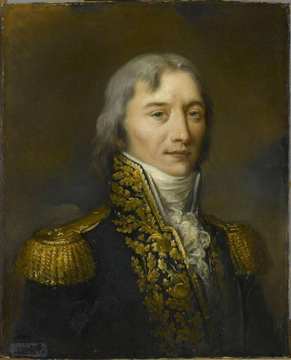
(리슈팡스는 호헨린덴에서의 활약이 빛을 잃을 정도로 무자비한 통치를 과달루프에서 펼쳤습니다. 천벌을 받았는지 그도 황열병에 걸려 죽었지요. 모두 22명의 프랑스 장군들이 이렇게 허무하게 모기에 물려 죽었습니다.)
이렇게 되자 르클레르는 광적이다 싶을 정도로 잔혹하게 흑인 토벌에 나섭니다. 전에도 언급되었습니다만, etouffoir(질식)라는 이름의 일종의 가스선을 만들어 유황 연기로 흑인들을 대량으로 질식사시킨 것도 이 때의 일입니다. 이때 르클레르가 본국의 나폴레옹에게 보낸 편지를 보면 르클레르가 거의 미쳐가고 있다고 생각될 정도입니다.
"이제 내게 남은 수단이라고는 공포 밖에 없으니, 그걸 쓰겠습니다."
"산속의 흑인들은 남자건 여자건 12살 이하의 아이들을 빼고는 모두 죽여야 합니다. 평야 지대의 흑인들도 절반은 죽여야 합니다."
하지만 결국 르클레르는 끝까지 노예제를 생 도밍그에 다시 선포하지는 못했습니다. 그렇다고 그럴 생각이 애초에 없었고, 흑인들이 공연히 오해한 것도 아니었습니다. 그가 나폴레옹에게 보낸 편지를 보면 이런 내용이 들어있습니다.
"때가 무르익기 전에는 노예제를 다시 선포할 생각하지 마십시요... 정부의 선포에 따라 제 후계자가 노예제를 수립할 시간은 충분할 겁니다... 제가 흑인들을 달래기 위해 전에 그토록 많은 약속과 선언을 했는데, 이제 와서 제가 과거 약속을 깰 수는 없는 노릇입니다..."
또 이런 내용들도 들어있습니다. 이것을 보면 데살린과 크리스토프의 성격이 어떠했는지, 그가 어떤 어려움에 직면하고 있었는지, 또 나폴레옹이 확실히 돈 문제에는 인색했다는 점도 드러납니다.
"아직까지는 데살린은 반란을 일으킬 생각은 안 하고 있었으나, 이제 생각을 하는 모양입니다. 그렇다고 그를 체포할 수도 없습니다. 만약 그랬다가는 아직 형식적으로나마 내게 충성을 맹세하는 흑인 병사들이 모조리 들고 일어날 것이기 때문입니다. 크리스토프에게는 그나마 좀더 믿음이 갑니다. 하지만 이들을 체포하려한다면 동시에 둘다 잡아야만 합니다."
"약속하신 1만2천의 증원 병력 중 현재까지 겨우 6,723명을 받았습니다. 이들을 곧장 전투에 투입했는데, 이젠 모조리 죽어버렸습니다. 내 위치는 점점 약해지고 있습니다. 손실은 계산이 불가능할 정도입니다."
"한 달 전 도착한 증원군은 이미 모두 다 죽었습니다. 현재 바다를 건너오는 증원 병력 외에도 1만 명을 더 보내주십시요. 그리고 약속 어음 말고 현금으로 2백만 프랑도 함께 보내주십시요. 제가 돈 이야기를 꺼내면 제1통령께서는 답장을 안하시더군요. 제 입장이 되어 보십시요... 저는 이 섬을 떠날 것을 심각하게 고려 중입니다. 생 도밍그를 유지하려면 정예병력 7만 명을 현지에 유지해야 합니다."
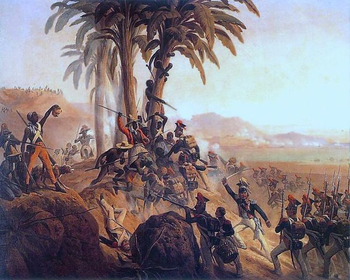
(생 도밍그에서의 전투는 양측 모두 야만성의 한계가 어디까지인가를 보여주는 잔인한 것이었다고 합니다. 그림 속의 백인 군대의 군모가 꽤 특이하지요 ? 맞습니다. 이들은 프랑스군이 아니라 폴란드군입니다. 나폴레옹이 폴란드를 해방시켜줄 것으로 기대하며 이탈리아에서 오스트리아군과 싸웠던 폴란드군에 대해, 나폴레옹은 조국의 해방 대신 보답으로 낭만적인 카리브해 여행권을 끊어주었습니다. 강대국에 의존하는 독립운동은 항상 끝이 좋지 않습니다.)
8월이 되어 전황이 나빠지자 르클레르는 현지에 와있던 폴린과 그의 아들 데르미드(Dermide Louis Napoleon)를 프랑스로 돌려보낼 생각을 했습니다. 그러나 '나도 여기서는 조세핀처럼 군림한다, 여기서는 내가 1인자다'라며 일종의 왕비 생활을 즐기던 폴린은 '품위 유지비로 10만 프랑을 주기 전에는 프랑스에 돌아가지 않겠다'며 땡깡을 부려 그렇쟎아도 기진맥진한 르클레르의 복장을 터지게 했습니다. 10만 프랑이면 현재 가치로 약 12억 정도의 돈인데, 르클레르가 본국 노벨라라(Novellara) 인근에 가지고 있던 부동산 가격이 고작 16만 프랑이었므로, 르클레르에게는 그런 큰 돈이 있을리 없었습니다. 남편이 돈을 내놓지 못하자 폴린은 그냥 남기로 합니다. 문제는 폴린의 방종한 생활은 여기서도 이어져, 여러 명의 애인을 두고 있었다는 점입니다. 심지어 말단 병사 몇 명과도 대담한 정사를 벌였다고 합니다.
그러던 와중에 어느날 작전 회의 중 르클레르는 사람들이 보는 앞에서 참지 못하고 구토를 하게 됩니다. 이는 황열병의 시작을 알리는 증상이었지요. 폴린은 이때서야 아내 역할을 다하여 성심껏 르클레르를 간호했는데, 아무 효과를 보지 못했고, 11월 1일, 르클레르는 투쌩보다도 오히려 먼저 저승길을 떠납니다. 폴린과 그 아들은 르클레르의 화장한 유해와, 따로 떼어낸 그의 심장을 가지고 본국으로 돌아갑니다.
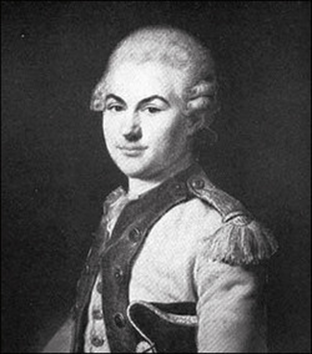
(미국 독립전쟁에 참전했던 아버지의 대를 이어 아메리카 쪽에 발을 담그게 된 로샹보 자작입니다. 르클레르와 함께 못된 짓을 아주 많이 저질렀습니다.)
르클레르의 후임은 로샹보 장군이 맡았습니다. 그러나 그는 정말 흑인과 뮬래토들을 증오하는 인물이었기 때문에, 로샹보가 사령관이 되자 전부터 기세가 심상치 않았던 흑인 장군들인 데살린과 크리스토프 뿐만 아니라, 처음부터 백인 측에 붙었던 뮬래토 장군인 페티옹(Alexandre Petion)까지 반란군 측으로 넘어가버렸습니다. 하지만 가장 큰 타격은 바로 생 도밍그 원정을 가능하게 했던 아미앵 평화 조약의 붕괴였습니다. 즉 1803년 5월 18일, 영국이 프랑스에 선전포고를 하면서, 다시 프랑스의 항구들을 봉쇄한 것입니다. 일이 이렇게 되자, 사실상 이미 전세는 완전히 기울게 되었습니다. 결국 1803년 11월 베르티에르(Vertières) 전투에서 흑인 반란군에게 최종적으로 패배한 로샹보는 결국 생 도밍그를 떠날 수 밖에 없었습니다. 초라하게 돌아가던 로샹보는 그나마 도중에 타고 있던 프리깃 라 쉬르베이앙트(La Surveillante) 호가 영국 해군에 나포되는 바람에, 전쟁 포로로 영국에 무려 9년간이나 잡혀 있다가 1811년, 포로 교환에 의해 겨우 프랑스로 돌아올 수 있었습니다.
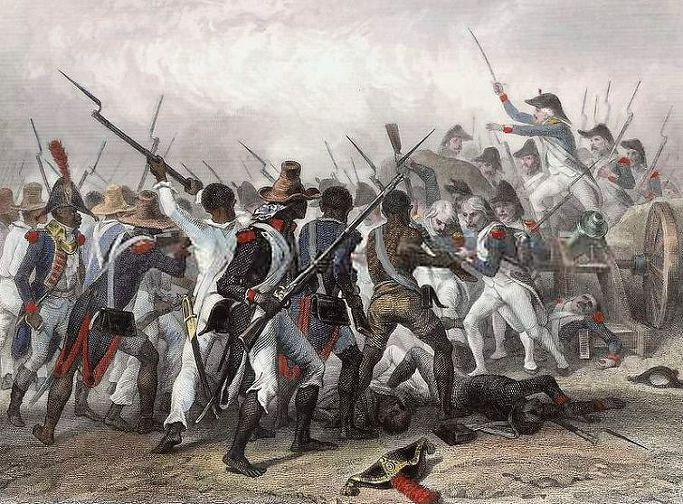
(나폴레옹의 최종적인 패배를 결정지은 1803년 베르티에르 전투의 모습입니다.)
이후 아이티(Haiti, Ayiti, 아메리카 타이노 족의 언어나 아프리카 언어로나 모두 집 또는 성스러운 대지를 뜻한다고 합니다)로 이름을 바꾸면서 1804년 1월 1일 독립을 선언한 생 도밍그의 그 후 이야기는 그다지 밝고 아름답지 않았습니다. 먼저, 정권을 잡은 데살린은 황제로 즉위한 것까지는 좋았으나, 완전한 자유를 쟁취한다는 말도 안되는 이유로 생 도밍그에 아직 남아있던 백인 중 흑인과 결혼하기로 약속한 백인 여자만 빼고 모두를 살해하는 만행을 저지르는 등, 정상적인 정치를 하지 못했습니다. 원래 온순한 주인 밑에서 그런대로 무난한 노예 생활을 했던 투쌩과는 달리, 포악한 주인 밑에서 비참한 노예 생활을 했던 데살린은 백인들 뿐만 아니라 자신의 권력에 도전하는 흑인들과 뮬래토들도 잔혹하게 탄압했습니다. 결국 그는 1806년 암살되고 말았지요.
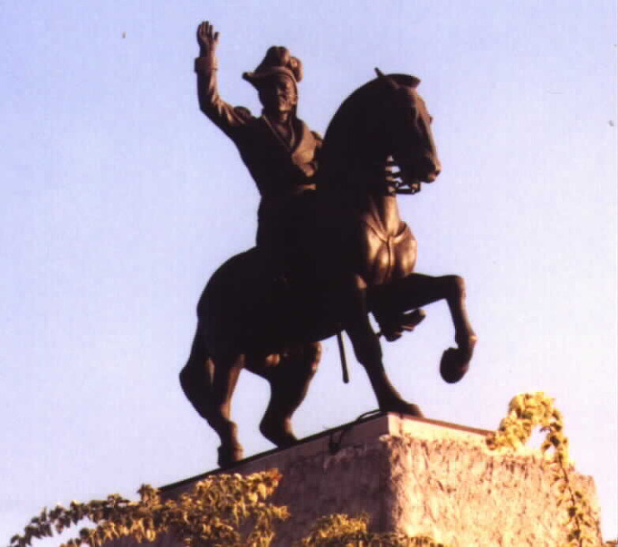
(데살린의 동상입니다. 현대에 들어서, 데살린의 암살은 (물론 황제인 자기 자신을 빼고는) 1인1표제의 만민 평등을 주창한 데살린의 정책으로 인해, 자신들의 특권을 빼앗긴다고 생각한 뮬래토들 및 그와 결탁한 외국 세력의 소행으로 보는 견해도 있습니다. 하지만 제가 볼 때는 독재자는 그냥 독재자에요.)
그 뒤를 이은 것은 남북 분단의 시대였습니다. 북쪽에서는 캅 프랑셰를 기반으로 한 앙리 크리스토프가 앙리 1세 (Henri I)로서, 황제가 아닌 왕으로 즉위했고, 남쪽에서는 포르토 프랭스를 기반으로 뮬래토 장군인 페티옹(Alexandre Petion)이 종신 통령으로 지배하는 공화국이 들어섰습니다. 이 두 분단국의 정치는 각기 특색이 있었는데, 크리스토프, 아니 앙리 1세는 토지를 모두 국유화하고, 과거 투쌩처럼 흑인들을 강제로 동원하여 사탕수수 농사를 짓도록 했습니다. 물론 노예제는 아니고 임금제 노동이었지요. 반면에 페티옹은 싼 값에 토지를 국민들에게 매각하여 각자 마음대로 농사를 짓도록 했습니다.
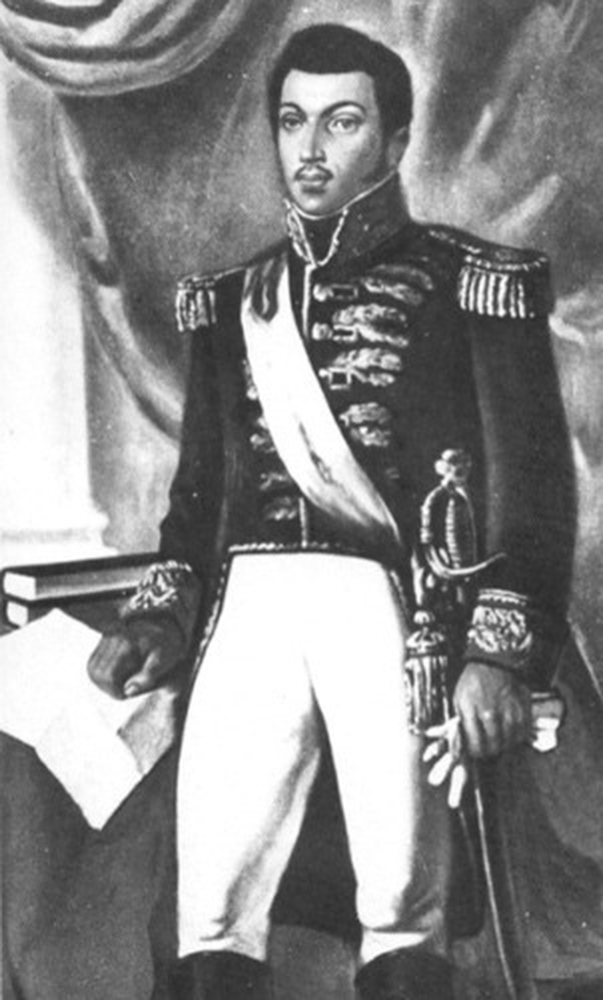
(뮬래토들의 이익을 대변했던 페시옹입니다. 그의 정치는 흑인보다는 뮬래토 엘리트들을 위한 정치라고 할 수 있었는데, 결과적으로는 아이티 경제에 매우 나쁜 영향을 주었습니다. 그럼에도 불구하고 온화했던 그의 정치로 인해, 국민들은 그를 매우 좋아했다고 합니다.)
이런 조치는 양국의 모습을 상당히 다르게 만들었습니다. 북쪽의 앙리 1세의 국민들은 사탕수수 무역으로 벌어들인 돈으로 물질적으로는 꽤 넉넉한 살림을 꾸릴 수 있었으나, 노예 생활과 별반 차이가 나지 않는 강제 노역으로 인해 불만이 컸습니다. 그에 비해 자유방임적인 경제 생활을 허락한 남부 공화국은 국민 대다수가 힘든 사탕수수 농사보다는 당장 먹을 곡식과 좀더 쉬운 커피 농사에 치중하는 바람에 경제적으로는 매우 쪼들리는 생활을 하게 되었습니다. 하지만 정작 국민들은 북쪽에서 남쪽으로 자꾸 탈출하여 앙리 1세의 마음을 어둡게 했습니다. 결국 나중에 병으로 신체 마비까지 온 앙리 1세는 1820년 자살을 택했고, 결국 아이티는 페티옹의 후계자인 부아예(Jean-Pierre Boyer)에 의해 다시 통일됩니다. 부아예는 내친 김에 스페인령 산토 도밍고까지 완전 정복하여, 드디어 히스파니올라 섬 전체가 하나의 국가로 통일되었지요. 그러나 온화한 페티옹과는 달리 잔혹했던 독재자 부아예의 정치는 산토 도밍고(지금의 도미니카) 주민들의 마음을 얻지 못해, 결국 다시 아이티와 도미니카는 분할을 맞게 됩니다. 지금도 도미니카 사람들은 아이티 사람들을 별로 좋아하지 않는다고 합니다.
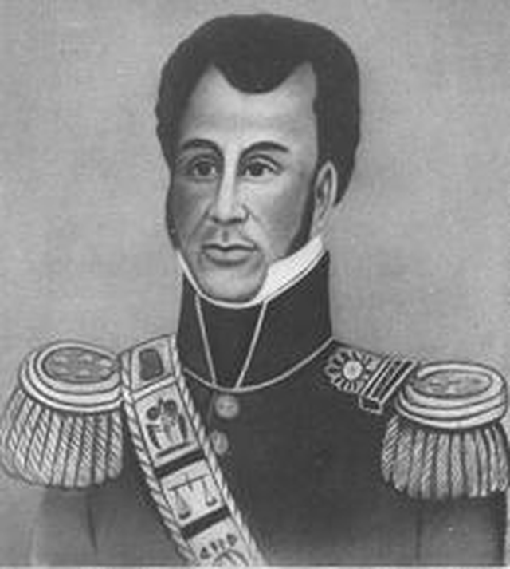
(페시옹의 뒤를 이은 부아예도 당연히 뮬래토 출신입니다.)
아이티의 미래를 크게 어둡게 한 것은 이런 정치적 불안정만이 아니었습니다. 무력으로 독립한 아이티는 항상 전 주인인 프랑스의 위협에 시달려야 했습니다. 프랑스에는 아이티의 토지와 농장 뿐만 아니라, 아이티 국민 전체가 노예로서 자신의 재산이라고 주장하는 부자들이 있었고, 프랑스는 이런 부자들의 입김에 좌우되는 나라였으니까요. 부아예는 이 문제를 결국 돈으로 해결하기로 합니다. 즉 프랑스로부터 독립을 인정받는 대신, 과거 주인들이 입은 경제적 피해를 돈으로 보상하겠다고 나선 것이지요. 1825년 7월 11일, 보이에르는 프랑스에게 1억5천만 프랑을 5년 안에 지불하겠다는 조약을 맺습니다. 이건 아이티의 낙후된 경제력을 볼 때 도저히 불가능한 일이었지요. 결국 이 금액은 1838년에 가서 9천만 프랑으로 감축되었으나, 그래도 도저히 갚을 수 없는 금액이었으므로, 결국 아이티는 이 돈을 프랑스 은행에서 꿔서 프랑스 정부에 갚아야 했습니다. 즉, 아이티는 시작부터 그 미래를 프랑스에게 담보로 잡힌 상태였던 것이지요. 원리금 상환에 짓눌린 나라가 잘 돌아갈 리가 없었고, 지금도 아이티는 무척 빈곤한 나라로 남아있습니다. 아, 참고로 부아예는 1843년에 성난 빈민들에게 쫓겨나 결국 프랑스에 정착했고 거기서 죽었습니다.
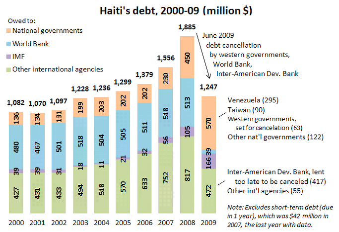
(지금도 아이티는 빚에 허덕이는 나라입니다. 지금은 물론 프랑스 빚보다는 미국과 IMF에 진 빚이 훨씬 더 많습니다.)
이런 훗날 이야기말고도, 생 도밍그의 반란과 독립은 나폴레옹과 대서양을 둘러싼 나라들에 중대한 영향을 끼쳤습니다. 먼저 생 도밍그부터 시작하여 프랑스 제국을 신대륙으로 뻗치려 했던 나폴레옹은, 돈을 벌어오는 것이 아니라 병력과 돈을 잡아먹기만 하는 생 도밍그의 현실을 보고는 입맛이 싹 가셨습니다. 그는 예전에 프랑스 영토였던 손바닥만한 생 도밍그 하나를 재정복하는 것도 이렇게 힘든데, 하물며 저 넓은 루이지애나를 경영한다는 것은 도저히 불가능하다고 판단했습니다. 게다가 말타나 이집트 등을 둘러싸고 영국과의 교섭이 제대로 진행되지 않자, 나폴레옹은 곧 영국과의 전쟁이 다시 시작될 수 밖에 없다고 예측하고 있었습니다. 결국 그는 1803년 4월 30일, 미국과 루이지애나 매각 협정을 맺습니다. 가격은 현금 6천만 프랑에 그 동안 미국에 지고 있던 빚 1천8백만 프랑의 상계, 그러니까 총 7천8백만 프랑이었습니다. 이를 현재 가치로 환산하면 2억3천3백만 달러, 그러니까 2650억원 정도입니다. 엄청난 헐값이었지요. 게다가 손바닥만한 생 도밍그의 독립을 인정해주고 받아낸 돈이 무려 9천만 프랑이었다는 점을 생각하면 나폴레옹이 부동산 장사에는 정말 소질이 없었던 셈입니다. 결과적으로 투쌩과 생 도밍그 노예 반란이 없었다면, 어쩌면 북아메리카 지도는 매우 달라졌을 수도 있었겠지요.
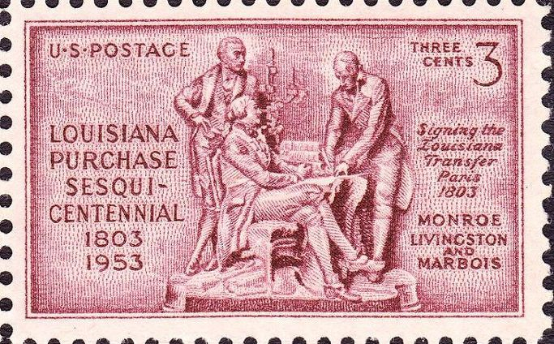
(미국에서 발행된 루이지애나 매각 기념 우표입니다. 저기에 보이듯이 프랑스측에서는 마르부아가 서명했습니다.)
하지만 투쌩이 시작한 아이티 독립 사건의 가장 중대한 의미는 바로 흑인에 의한 흑인의 구원이라는 점입니다. 많은 노예 반란 사건이나 탈출 사건 등이 있었으나 모두 실패했고, 유일하게 성공한 노예 반란이 바로 이 아이티의 독립입니다. 특히 이 사건은 백인이 인도주의 차원에서 불쌍한 흑인을 구원해준 것이 아니라, 흑인이 총칼을 들고 백인과 싸워 이겨 스스로를 구원했다는 점에서 중대한 의미를 가집니다. 흔히 흑인 노예가 해방된 것은 영국의 인권 단체의 활동이나 링컨 대통령의 노예 해방 선언에 의한 것이라고 역사에 씌여 있습니다. 반면 이렇게 흑인 스스로가 흑인을 구원한 사실은 구미 위주의 역사에서 매우 등한시되는 사건입니다. 흑인이 백인의 도움을 받지 않고 스스로를 구원했다는 사실이 백인들 위주의 사회에서는 아무래도 불편한 사실이고, 또 투쌩은 백인 사회에서는 무척 불편한 영웅인 셈입니다. 미국 대통령이 흑인인 이 시대에도, 헐리웃에서 만들어지는 흑인 이야기는 대부분이 백인이 흑인을 구원하는 내용입니다. 그리고 이토록 많은 이야기를 담고 있는 투쌩과 생 도밍그의 반란이 영화로는 만들어지지 않는 이유이기도 합니다.
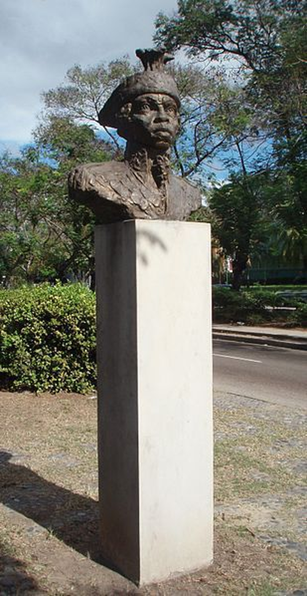
(이 투쌩의 흉상도 미국이나 프랑스가 아닌, 쿠바에 세워진 것입니다. 백인들에게 투쌩은 여전히 불편한 존재인가 봅니다.)